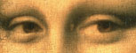

Hidden Techniques Leonardo Di Vinci Used
According to Louvre Curator Jean-Pierre Cuzin, "The entire history of
portraiture afterwards depends on the Mona Lisa. If you look at all the
other portraits – not only of the Italian Renaissance, but also of the
seventeenth to nineteenth centuries – if you look at Picasso, at
everyone you want to name, all of them were inspired by this painting.
Thus it is sort of the root, almost, of occidental portrait painting."
Mona Lisa detail In a break with the Florentine tradition of outlining
the painted image, Leonardo perfected the technique known as sfumato,
which translated literally from Italian means "vanished or evaporated."
Creating imperceptible transitions between light and shade, and
sometimes between colors, he blended everything "without borders, in the
manner of smoke," his brush strokes so subtle as to be invisible to the
naked eye. Leonardo was fascinated by the way light falls on curved
surfaces. The gauzy veil, Mona Lisa's hair, the luminescence of her skin
– all are created with layers of transparent color, each only a few
molecules thick, making the lady's face appear to glow, and giving the
painting an ethereal, almost magical quality.

"Today's art critics call attention to the painting's mystery and
harmony," says Cuzin. "But the first art historians to describe it
emphasized its striking realism, pointing out 'the lips that smile' and
'the eyes that shine.'" Giorgio Mona Lisa detail Vasari, for example,
wrote in his early biography of da Vinci, Lives of the Painters: "As art
may imitate nature, she does not appear to be painted, but truly of
flesh and blood. On looking closely at the pit of her throat, one could
swear that the pulses were beating." The realism of his painting is a
result of Leonardo's diverse scientific observations. From the study of
human anatomy he developed a mathematical system for determining size in
space, perspective that is incorporated in the way Mona Lisa's torso,
head and eyes are each turned a little more toward the viewer. Da Vinci
also observed differences between the subject and objects in the
background, and used aerial perspective to create the illusion of depth:
the farther something is in the distance, the smaller the scale, the
more muted the colors and the less detailed the outlines. Mona Lisa
detail "Leonardo has studied the sky, the elements, the atmosphere, and
the light. He takes the approach of a scientist, but translates it into
the painting with superb delicacy and finesse. For him the painting
doesn't count. What counts is the knowledge," observes Cuzin. "In the
same painting we move from soft places like the clouds to areas of
extreme intricacy and fine detail. For example, around the neckline of
the lady's dress we have delicate interlacing embroidery. The contrast
of these different areas creates a cohesion that is very rare in
painting." All this we now take for granted. The Mona Lisa looks so
natural, and so familiar, that we forget how innovative the painting was
at the beginning of the sixteenth century.